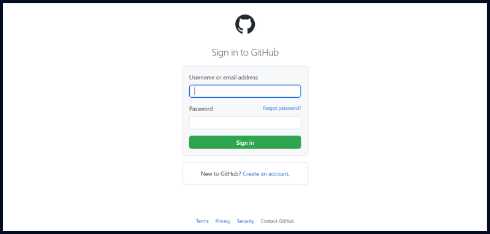
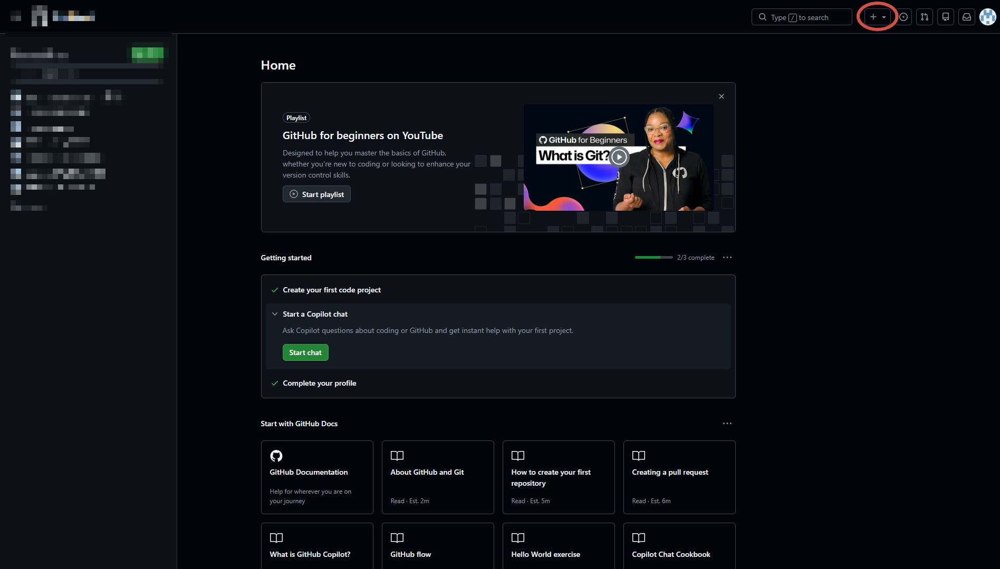
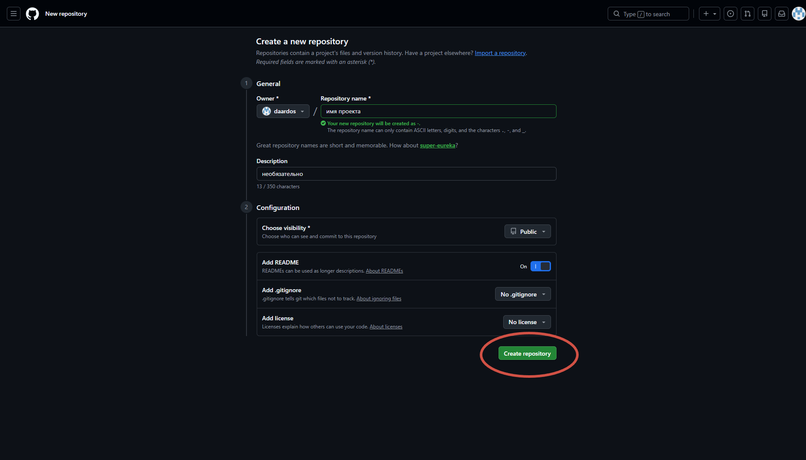
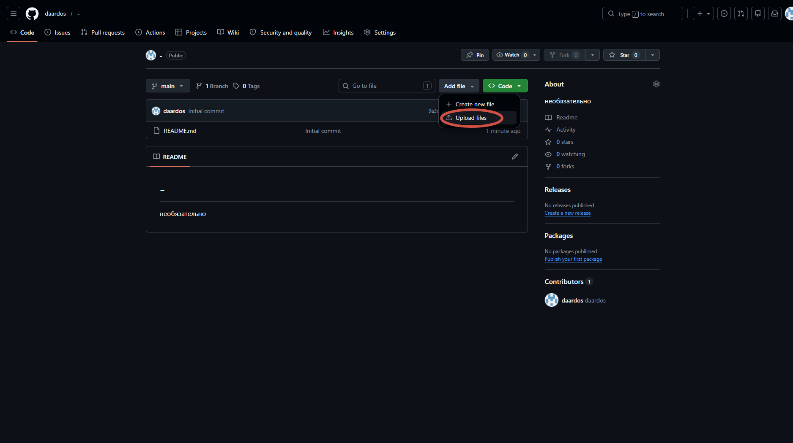
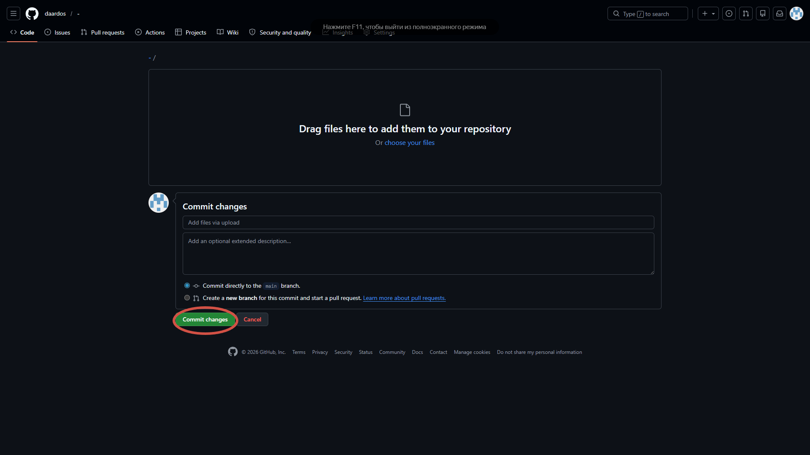
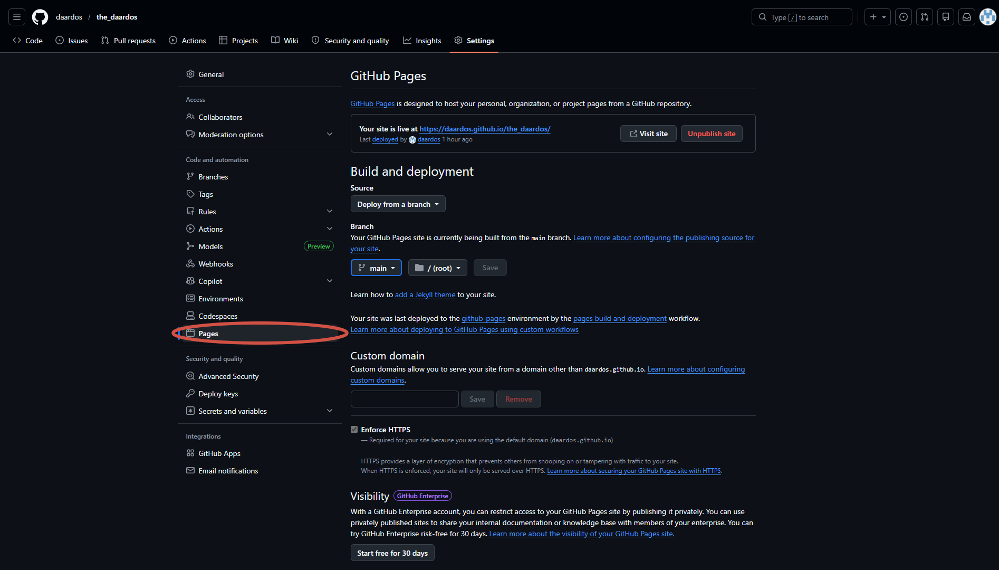
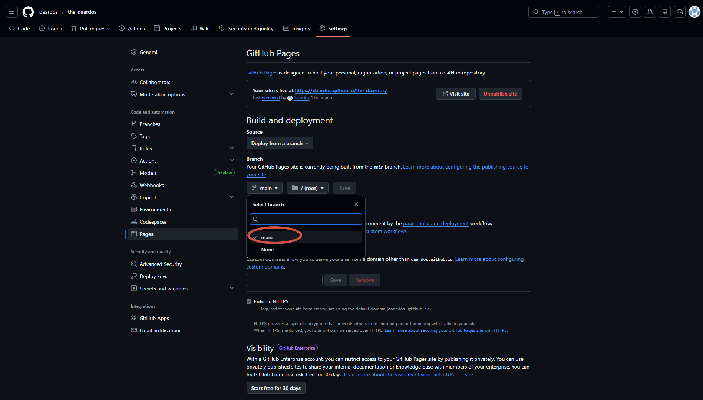

1. Регистрация
GitHub — это "облако" для твоего кода. Без него сайт в интернет не выложить.
💡 Почту лучше брать ту, которой пользуешься постоянно.
Гайд "на пальцах": от регистрации до первой ссылки в сети
GitHub — это "облако" для твоего кода. Без него сайт в интернет не выложить.

Проекты на GitHub называются "репозиториями". Это как папка, но в сети.


Теперь нужно перекинуть твой код с компа на GitHub.


Делаем так, чтобы сайт открывался по ссылке, а не как файл.

